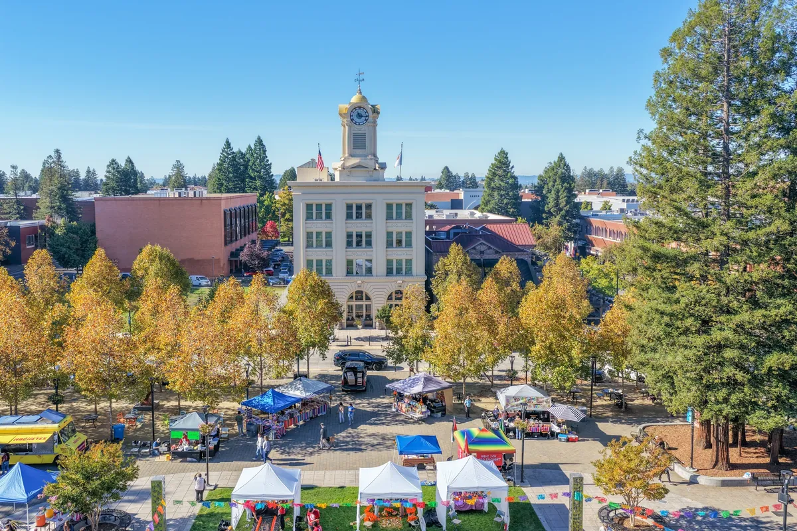

If your holiday list leans toward handmade, Santa Rosa has a full season of markets, with two big December weekends at the center of it. Here are the 2026 dates we could confirm, plus a few smaller fairs and day trips nearby. Hours and vendors can change, so check with each organizer before you go.
Handmade Holiday Crafts Fair: December 5 and 6
The City of Santa Rosa's Handmade Holiday Crafts Fair returns on Saturday and Sunday, December 5 and 6, 2026, at the Finley Community Complex, 2060 West College Avenue. Listings for the fair describe more than 90 local artists.
The same weekend, the Luther Burbank Home & Gardens runs free "Rosie the Trolley" rides to the fair, so it is easy to combine the two (see below).
Luther Burbank Holiday Open House: December 5 and 6
The 46th annual Holiday Open House at the Luther Burbank Home & Gardens runs Saturday and Sunday, December 5 and 6, 2026, from 10 a.m. to 4 p.m. Entry is $5 for ages 12 and older. The house is decorated for the holidays, Kris Kringle and Mrs. Kringle visit, there are homemade cookies in the Greenhouse, and both the main Gift Shop and the Carriage House Museum & Gift Shop are open.
- Where: Santa Rosa and Sonoma Avenues, downtown Santa Rosa.
- Parking: free parking at First and D Streets.
- Trolley: free Rosie the Trolley rides to the Handmade Holiday Crafts Fair at Finley Community Center.

So Ho Ho Holiday Market: December 12 and 13
The SoCo Market's fifth annual So Ho Ho Holiday Market takes over an indoor space at the Sonoma County Fairgrounds, 1350 Bennett Valley Road, on Saturday and Sunday, December 12 and 13, 2026, from 11 a.m. to 5 p.m. Organizers list more than 150 small businesses.
- Admission: free.
- Parking: the Fairgrounds charges $15. Organizers encourage carpooling or public transportation.
November fairs and bazaars
A few smaller events fill in the weeks before December. These are from the Happening in Sonoma County holiday craft fair listings:
- Snowflake Bazaar, Santa Rosa: Saturday, November 21, 10 a.m. to 2 p.m.
- Holiday Boutique, Santa Rosa: Sunday, November 29, 10 a.m. to 4 p.m., with 30-plus vendors and free admission. A raffle benefits Blood Cancer United.
For something different, the Charles M. Schulz Museum's Holiday Happy Hour on Saturday, November 21, from 4 to 6 p.m. is for adults 21 and over, who make a holiday shadow box with wine from Francis Ford Coppola Winery.
Day trips for more markets
Santa Rosa sits in the middle of the county, so it is easy to add a market in a nearby town:
- Sebastopol Grange Hall Craft Fair: November 21 and 22, 10 a.m. to 4 p.m., with 50-plus vendors.
- Appellation Healdsburg Holiday Market: December 5 and 6, 11 a.m. to 5 p.m.
- Forestville Holiday Faire: Saturday, December 5, 1 to 7 p.m.
- CUVER's Holiday Market, Windsor: Saturday, December 12, 3 to 7 p.m., at CUVER Belgian Brewers, with free entry.
A holiday market weekend from downtown
- Saturday morning, December 5: start at the Luther Burbank Home & Gardens when it opens at 10 a.m., then ride the free trolley to the Handmade Holiday Crafts Fair.
- Saturday afternoon: drive to Healdsburg for the Appellation Healdsburg Holiday Market, or west to the Forestville Holiday Faire.
- Saturday evening: dinner downtown. Our downtown food guide has ideas.
- Sunday: a second look at the crafts fair for anything you passed up, or come back the next weekend for So Ho Ho at the Fairgrounds.
Good to know
- Handmade Holiday Crafts Fair: December 5 and 6, Finley Community Complex.
- Luther Burbank Holiday Open House: December 5 and 6, 10 a.m. to 4 p.m., $5 for ages 12 and up.
- So Ho Ho Holiday Market: December 12 and 13, 11 a.m. to 5 p.m., free entry, $15 Fairgrounds parking.
Stay downtown for market weekends
A downtown base keeps the Burbank gardens a short walk away and puts the Finley and Fairgrounds markets a quick drive across town. Hotel E is in a historic building on Old Courthouse Square, with continental breakfast before an early start, an evening happy hour after a day of shopping and valet parking for the car full of gifts. Art House Santa Rosa is a few blocks away on 7th Street.
Plan your stay downtown
Browse hotels, restaurants, wineries and attractions, all in one place.
Open the directory